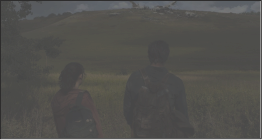
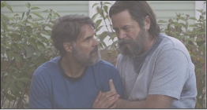
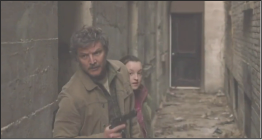

THE LAST OF US I
Quando estiver perdido no escuro, procure a luz, acredite nos vaga-lumes.
SOBRE
- SOBREVIVÊNCIA
- RELAÇÕES
-  AVENTURA
Uma série de televisão dramática pós-apocalíptica americana criada por Craig Mazin e Neil Druckmann para a HBO. Vinte anos em uma pandemia causada por uma infecção fúngica em massa, que força seus hospedeiros a se transformarem em criaturas semelhantes a zumbis e colapsa a sociedade.
A série segue Joel (Pedro Pascal), um contrabandista encarregado de escoltar a adolescente Ellie (Bella Ramsey) através de um Estados Unidos pós-apocalíptico. As estrelas convidadas incluem Nico Parker como a filha de Joel, Sarah, Gabriel Luna como o irmão mais novo de Joel, Tommy, Merle Dandridge como líder da resistência Marlene e Anna Torv como a contrabandista parceira de Joel, Tess.
The Last of Us foi filmado em Alberta de julho de 2021 a junho de 2022. É a primeira série da HBO baseada em um videogamee é uma produção conjunta da Sony Pictures Television, PlayStation Productions, Naughty Dog, the Mighty Mint e Word Games .
The Last of Us se tornou um dos assuntos mais comentados nas redes sociais nesta segunda-feira (26/09/22). O título se refere a um jogo eletrônico de ação, aventura e sobrevivência lançado inicialmente em 2013 que se tornará uma série da HBO. Após o lançamento oficial do teaser da produção, os comentários acerca da futura série se multiplicaram. No jogo, Joel, um sobrevivente endurecido, é contratado para tirar uma menina de 14 anos de idade de uma zona opressiva de quarentena militar. O que começa como um pequeno trabalho logo se torna uma jornada brutal e comovente, pois ambos precisam atravessar os Estados Unidos e dependem um do outro para sobreviver. O enredo do primeiro título conta ainda com cidades abandonadas, que foram retomadas pela natureza e uma população que foi dizimada por uma praga moderna. Os sobreviventes lutam por comida, armas e não hesitam em matar para permanecer vivos.
A praga Em The Last of Us, os acontecimentos giram em torno da infecção causada pelo cordyceps, um fungo da clase dos ascomicetos, que cresce principalmente em insetos e artrópodes. É uma variação deste tipo de fungo que começa a infectar os humanos no jogo, gerando mutações bizarras que devastan boa parte da população da Terra. O diretor da franquia, Neil Druckman, teve um longo processo de pesquisa para desenvolver essa teoria com profundidade. Entretanto, as chances de uma pandemia causada pelo cordyceps se desenvolver entre os humanos são mínimas e estão mais próximas da ficção, visto que o fungo não se desenvolve no sistema nervoso humano.
O segundo jogo A sequência da franquia, The Last of Us II, acontece cinco anos depois da jornada de Ellie e Joel pelos Estados Unidos. Os dois começam a morar em Jackson, um vilarejo do estado de Wyoming onde encontraram paz e estabilidade. As ameaças de infectados continua a existir, mas não preocupa tanto. Os eventos mudam radicalmente quando um evento violento acontece e faz com que Ellie deixe o reduto calmo para tentar solucionar o problema. A jornada traz reflexões físicas e emocionais para a personagem principal.
A série O primeiro teaser da produção foi divulgado pela HBO. Com lançamento previsto apenas para 2023, o elenco contará com o ator Pedro Pascal interpretando o protagonista Joel. A atriz Bella Ramsey foi a escolhida para ser a intérprete de Ellie. O ator Gabriel Lun foi confirmado no elenco de The Last of Us como o intérprete de Tommy, o irmão mais novo de Joel. Merle Dandridge, Nico Parker, Jeffrey Pierce, Murray Bartlett e Con O’Neil também estão no elenco da série. O desenvolvimento fica com Craig Mazin e Neil Druckmann.